In this project we implement the core components of a Monte Carlo path tracer. We begin by generating camera rays
from image-space samples, tracing the rays into the scene, and then computing intersections with geometric primitives.
We then accelerate scene traversal by improving the performance with a bounding volume hierarchy.
The bounding volume hierarchy reduces the cost of ray traversal, effectively improving the rendering of more complicated
scenes.
We then add direct illumination with diffuse BSDF evaluation and shadow rays, extend the renderer to global
illumination with recursive path tracing and Russian Roulette, and finally reduce unnecessary computation through
adaptive sampling. Our renderer progresses from normal-shaded debugging output to physically
based images with soft indirect lighting, color bleeding, and improved sampling efficiency.
From tracking our progress, we see early outputs such as ray-direction
and normal shading visualizations to physically based images with soft shadows,
indirect light transport, and improved sampling efficiency. One of the main ideas
reinforced by this project is that realistic rendering depends on geometric correctness,
efficient acceleration structures, and careful sampling strategies.
Build / Run Notes
We worked on Windows in Visual Studio using the CMake Open Folder workflow in x64-Debug. Dependencies were provided
through vcpkg and the CMake toolchain file was configured as C:\vcpkg\scripts\buildsystems\vcpkg.cmake.
We built using Build → Build All. We ran pathtracer.exe from the build output directory using command line
arguments in launch.vs.json. Since Visual Studio launches from the build folder, relative paths typically
need ../../../ to reach the repository root. We used the -f option to save screenshots directly,
along with flags such as -r for resolution, -s for samples per pixel, -l for samples
per light, and -m for maximum ray depth.
# Visual Studio CMake run arguments
# launch.vs.json
"args": ["../../../dae/keenan/banana.dae"]
# Common flags used in Homework 3
# -f output image filename (windowless mode)
# -r width height
# -s camera rays / samples per pixel
# -l samples per area light
# -m max ray depth
# -t thread count
# GUI shortcut
# S save screenshot
Figure 1. banana.dae sanity check renderer.
Part 1: Ray Generation and Scene Intersection
Ray generation and primitive intersection pipeline
For each pixel, the renderer generates one or more camera rays.
We use raytrace_pixel(...) to sample points inside each pixel,
rather than using only the pixel center. These samples are first
expressed in pixel coordinates and then normalized into image
coordinates in \( [0,1] \times [0,1] \). The normalized image
coordinates are then passed into Camera::generate_ray(...).
In the camera ray generation step, the camera is treated as the ray
origin in world space. Each image sample is mapped onto a virtual
sensor plane in camera space at \( z = -1 \). The horizontal and
vertical field of view determine the width and height of this
sensor plane. If the half-width and half-height are computed from
the tangents of half the corresponding field of view angles, then
the camera-space sample point on the sensor plane is
The ray direction is formed from the camera origin through this
sensor-plane point and then normalized. After that, the direction
is transformed from camera space into world space using c2w. The
ray origin is the camera position pos, and min_t and max_t are
initialized using the near and far clip distances so that only
valid visible intersections are considered.
After the ray is created, it is passed into
est_radiance_global_illumination(...). In Part 1, this function
still returns debug output rather than real lighting. Before
primitive intersection is implemented, rays that do not hit any
geometry produce a ray-direction visualization. After primitive
intersections are implemented, the closest valid hit is used to
return normal shading instead.
For primitive intersection, the ray is tested against scene
primitives to determine whether it hits a triangle or a sphere.
Every candidate hit must satisfy the interval condition
\[
\texttt{ray.min_t} \le t \le \texttt{ray.max_t}.
\]
If a closer valid hit is found, ray.max_t is updated to that
smaller \( t \) value. This causes the renderer to keep the nearest
visible intersection instead of a farther one behind it. The full
intersect(...) version also stores the hit distance \( t \), the
surface normal, the primitive pointer, and the BSDF pointer.
Overall, this stage of the pipeline converts image-space samples
into rays, applies clipping bounds and closest-hit updates for
correct visibility, and determines which visible surface each ray
reaches.
Triangle intersection algorithm
A triangle is defined by three vertices \( \vec{\mathbf{p}}_1 \),
\( \vec{\mathbf{p}}_2 \), and \( \vec{\mathbf{p}}_3 \). From these,
we form the edge vectors
where \( \vec{\mathbf{o}} \) is the ray origin,
\( \vec{\mathbf{d}} \) is the ray direction, and \( t \) is a scalar
parameter giving the location of the hit along the ray. Since the
direction is normalized, \( t \) also corresponds to the distance
from the ray origin to the intersection point. The goal of the
algorithm is to solve for \( t \) together with the barycentric
coordinates of the hit point inside the triangle.
We implemented triangle intersection using the
Möller-Trumbore method, which solves the ray-triangle
intersection directly without explicitly computing the plane
equation first. The method uses cross products and dot products to
solve a compact linear system and returns the ray parameter
\( t \) together with the barycentric weights \( b_0 \),
\( b_1 \), and \( b_2 \).
The determinant is tested first. If it is very small, or close to
zero, then the ray is effectively parallel to the triangle plane or
the system is degenerate, so there is no valid hit. When the
determinant is nonzero, the algorithm computes \( t \), \( b_1 \),
and \( b_2 \), and then sets
\[
b_0 = 1 - b_1 - b_2.
\]
These barycentric coordinates tell us whether the hit lies inside
the triangle. A hit is accepted only if all barycentric
coordinates are nonnegative. If any of them is negative, then the
point lies outside the triangle. The hit is also rejected if
\( t < \texttt{ray.min_t} \) or \( t > \texttt{ray.max_t} \).
We used two related functions. The first, has_intersection(...),
checks whether a valid hit exists and updates ray.max_t if one is
found. The second, intersect(...), performs the same validity
checks and also writes the hit data into the intersection
structure.
Once the barycentric coordinates are known, they can also be used
to interpolate the vertex normals. We compute the interpolated
normal as
This interpolated normal is then normalized before being stored.
The use of interpolated normals produces smooth shading across the
triangle surface rather than a flat result based on a single
constant face normal.
Normal-shaded results on small .dae scenes
Our first test scene was CBspheres_lambertian.dae. This render
shows triangle and sphere intersection working together in the same
scene. The Cornell box walls are triangle-based geometry, while the
two interior objects are spheres. This confirms that the renderer
can distinguish and intersect multiple primitive types correctly.
The sphere colors change smoothly across the surfaces because the
output is based on surface normals rather than lighting.
We also rendered cow.dae as a more detailed mesh test. This
verifies that our triangle intersection algorithm still works
correctly on a higher-polygon model, making it a stronger test than
a simple primitive scene. The smooth color transitions indicate
that the nearest visible triangle hit is being detected correctly
and that the normal information is being applied accurately. The
silhouette and body shape also appear correct, which supports that
the triangle intersection logic is functioning properly on the
mesh.
Next, we rendered teapot.dae. This gave another triangle-mesh test
with more curved and narrow features, especially around the handle
and the spout. Rendering the teapot correctly shows that our
triangle intersection implementation can handle a wider variety of
shapes and silhouettes. The color gradients across the surface
reflect normal direction rather than physical lighting.
Finally, we rendered cube.dae as a simple geometric sanity check
for triangle meshes. Because the shape is so simple, it is easy to
visually confirm that the visible front-facing surfaces are being
hit correctly. The smooth normal-based coloration across the face
further confirms that normal shading is being returned from the
intersection result as expected.
Taken together, these four scenes show that Part 1 correctly
generates camera rays, intersects both triangles and spheres, keeps
the nearest valid hit, and returns normal-based debug shading from
the recorded intersection.
Figure 2. Normal shading result for CBspheres_lambertian.dae.
Figure 3. Normal shading result for cow.dae.
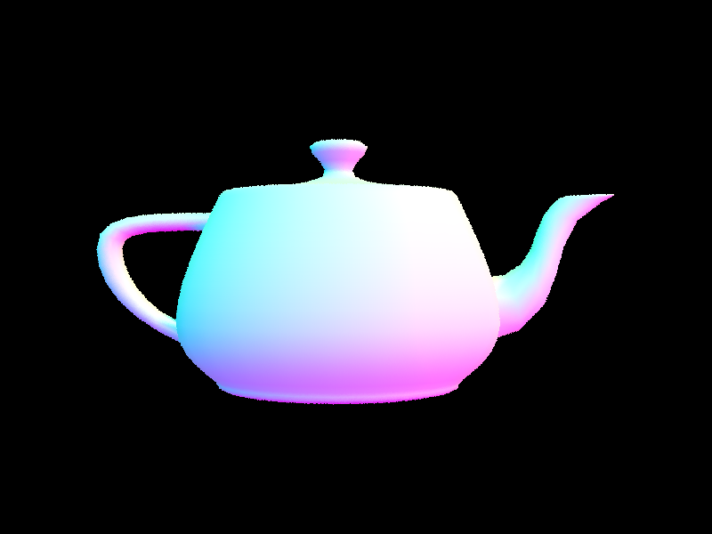
Figure 4. Normal shading result for teapot.dae.
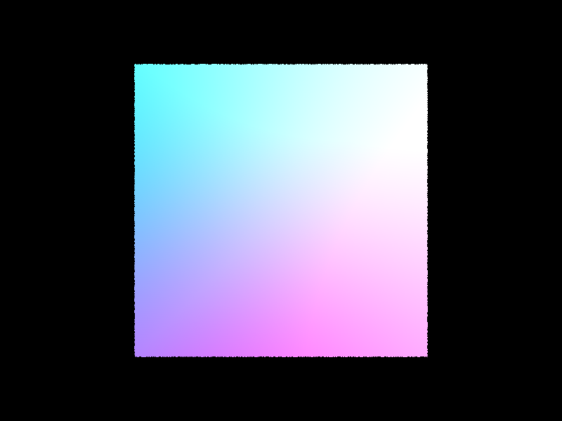
Figure 5. Normal shading result for cube.dae.
Part 2: Bounding Volume Hierarchy
We added bounding volume acceleration to reduce the cost of ray-scene
intersection on our .dae scenes, making it possible to render more
complex geometry efficiently. Our implementation was built from three
main pieces: the bounding volume hierarchy defined in construct_bvh,
ray-bounding-box intersection in BBox::intersect, and BVH traversal in
has_intersection and intersect. After completing the full algorithm,
rays no longer tested against nearly every primitive in the scene.
Instead, they first tested against bounding boxes and only descended
into relevant subtrees of the BVH.
Task 0: Rendering Time Comparison Before and After BVH Acceleration
To measure the effect of BVH acceleration, we compared rendering times
on several moderately complex scenes before and after implementing BVH
traversal. Our baseline measurements were taken when the renderer still
behaved like a brute-force primitive traversal, since it did not yet
use the existing BVH hierarchy to reject large groups of primitives.
After completing BVH traversal, rays were able to discard many
primitives through bounding-box tests instead of checking nearly every
primitive individually.
Scene
Before BVH Traversal (s)
After BVH Traversal (s)
cow.dae
68.1290
2.3490
teapot.dae
24.7266
1.8537
beetle.dae
95.1741
1.2052
Comparing the before and after results shows that BVH acceleration
reduced render times dramatically. Scenes that originally took tens of
seconds to more than a minute were reduced to only a few seconds after
traversal was implemented. This improvement came from the fact that the
completed BVH no longer forced each ray to test against almost every
primitive. For example, the average primitive intersection tests per
ray dropped from 5385.747256 to 3.552941 on cow.dae, from 2285.509974
to 2.660212 on teapot.dae, and from 7093.339997 to 1.841978 on
beetle.dae. The speedup therefore came from spatial pruning in the BVH
rather than any change to camera generation or shading.
BVH Construction Algorithm and Splitting Heuristic
We constructed the BVH recursively over a contiguous iterator range of
scene primitives. For each recursive call, we first computed a
bounding box that enclosed every primitive in the current range. This
bounding box became the bounding box stored in the current BVH node.
Our input iterator range [start, end) together with the variable
max_leaf_size defined the limits of the primitive subset for that call.
After the enclosing box was built, we created a BVHNode using that
bounding box and set
\[
n = end - start.
\]
If
\[
n \le \text{max_leaf_size},
\]
the node became a leaf and stored start and end directly. Otherwise,
we computed the centroid of each primitive bounding box and then
computed centroid bounds along each axis:
Our split heuristic chose the axis with the largest centroid extent.
After choosing that axis, we split at the midpoint of the centroid
interval on that axis:
The primitives were then partitioned into left and right subsets
according to whether their centroids lay to the left or right of this
split. This produced child nodes that were spatially more compact than
one large leaf node, which improved pruning during traversal.
We also handled the degenerate case where all primitives fall on one
side of the midpoint. In that case, we fell back to a median split
using std::nth_element. This guaranteed progress in the recursion and
prevented the BVH from getting stuck with an invalid one-sided
partition. After the split was determined, we recursively built the
left and right child nodes. Primitive centroids served as the scalar
positions for splitting, and choosing the axis with the largest
centroid extent gave a simple and inexpensive way to produce a more
balanced tree than splitting along an arbitrary axis.
Ray-Bounding-Box Intersection and BVH Traversal
After constructing the BVH, we implemented ray-bounding-box
intersection using the slab method. Since the bounding boxes are
axis-aligned, the ray can be tested independently against the x, y,
and z slabs. For each axis \(i\), we computed
the ray missed the box. Otherwise, the final interval \([t_0, t_1]\)
represented the portion of the ray inside the bounding box.
During BVH traversal, each ray was first tested against the bounding
box of the current node. If the ray missed that box, the entire
subtree could be skipped immediately. If the ray hit the box, the
traversal continued into the children, or, in the case of a leaf node,
into the small set of primitives stored in that leaf. In
has_intersection, traversal returned as soon as any valid hit was
found. In intersect, traversal could not short-circuit in the same
way, because it had to preserve the nearest valid hit. This is what
made the BVH effective: bounding-box rejection avoided many expensive
primitive intersection tests and limited primitive checks to only a
small number of relevant leaves.
Normal-Shaded Images for Large .dae Files Rendered with BVH Acceleration
To demonstrate that BVH acceleration makes larger scenes practical to
render, we generated normal-shaded images for three more detailed .dae
scenes: bunny, dragon, and wall-e. These scenes contain much more
geometry than the smaller Part 1 test scenes, so they are stronger
demonstrations of why BVH acceleration matters. In each case, the
output preserves the full model silhouette and shows the expected
normal-based color variation across the surface.
The bunny image shows smooth normal variation across rounded organic
forms such as the body and ears. The dragon scene contains a much more
detailed silhouette with thin protrusions and curved surface regions,
so it demonstrates that the BVH remains effective on denser geometry.
The wall-e scene adds a more mechanical shape profile with flatter
faces and sharper transitions, showing that the implementation works on
both curved organic surfaces and more rigid geometric structures.
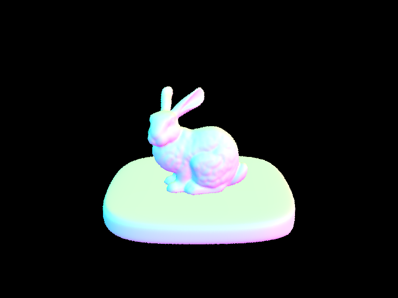
Figure 6. Normal-shaded render of bunny.dae.
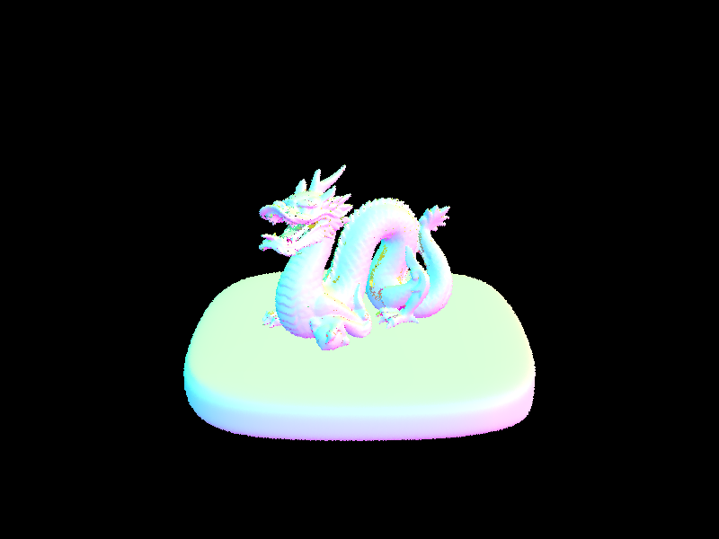
Figure 7. Normal-shaded render of dragon.dae.
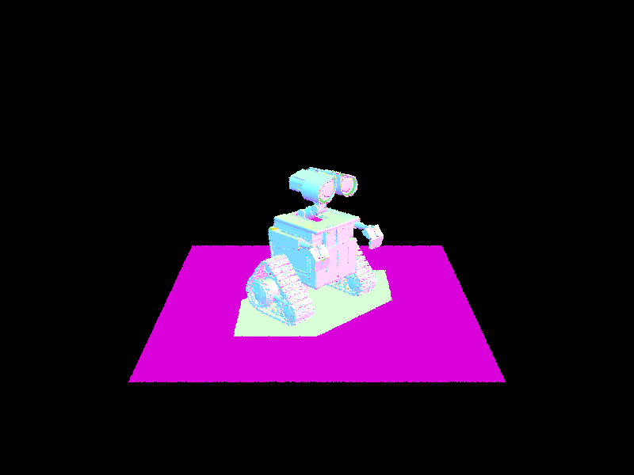
Figure 8. Normal-shaded render of wall-e.dae.
Part 3: Direct Illumination
Implementation Overview
In Part 3, we moved from normal-shaded debugging output to direct illumination by
uniform hemisphere sampling and importance sampling of scene lights. Our path tracer
interface includes estimate_direct_lighting_hemisphere, estimate_direct_lighting_importance,
zero_bounce_radiance, one_bounce_radiance, and est_radiance_global_illumination. The final
radiance value is the sum of emitted radiance from the directly hit surface and one-bounce
direct illumination from visible light sources. The current integration path adds
zero_bounce_radiance and one_bounce_radiance inside est_radiance_global_illumination.
This structure was created first without recursive indirect transport, which is added later
through at_least_one_bounce_radiance.
Our diffuse material model is Lambertian. The Lambertian bidirectional scattering distribution
function is constant with respect to direction and equals albedo divided by \( \pi \).
We implemented DiffuseBSDF::f to return reflectance / PI, where reflectance represents the
stored diffuse albedo. The direct-lighting integrand uses the relationship
\( f(\omega_o, \omega_i)L_i(\omega_i)\cos\theta \), where
\( f(\omega_o, \omega_i) = \rho / \pi \). The bidirectional scattering distribution
function term controls how much incoming light is reflected. The cosine term accounts for
foreshortening relative to the surface normal. The isotropic nature of Lambertian reflection
means that the bidirectional scattering distribution function value is not directionally dependent.
Zero-bounce Illumination
During zero-bounce illumination, radiance is emitted from the surface directly hit by the ray.
Our zero_bounce_radiance method returns isect.bsdf->get_emission(), where the emitted-radiance
term is the \( L_e \) term in the rendering equation. Light sources become visible immediately
through this term before direct reflection accumulates from other surfaces. In this case,
non-emissive diffuse surfaces do not contribute visible light from zero-bounce illumination alone.
Uniform Hemisphere Sampling
The hemisphere estimator samples incoming directions uniformly over the hemisphere above the
surface. A local shading coordinate frame is built by aligning the surface normal with the
local positive z-axis using make_coord_space. A world-to-local transform and a local-to-world
transform are both used in the direct-lighting paths. The outgoing direction is the negated
ray direction transformed into local coordinates,
\( \omega_o = w2o \cdot (-r.d) \), and the hit point follows the standard ray equation
\( p = r.o + t r.d \), where \( r \) is the ray, \( r.o \) is its origin, \( r.d \) is
its direction, and \( t \) is the intersection distance. Each Monte Carlo sample draws a
direction \( \omega_i \) uniformly from the local hemisphere. The sampled direction vector
is transformed back into world space to build a shadow ray, which starts at the hit point
and uses min_t = EPS_F to avoid self-intersection. The direct-lighting code uses this epsilon
offset to test visibility, and a sample contributes only when the shadow ray hits an emissive
surface.
The uniform hemisphere probability density function is
\( p(\omega_i) = \frac{1}{2\pi} \), and the estimator takes the form
The cosine term is the magnitude of the local z-component, corresponding to
abs_cos_theta. This estimator is unbiased, but its variance is high when the light occupies
only a small region of the hemisphere. Most samples miss the actual light source, which
produces many zero-contribution terms. The visible consequence is strong speckling across the
floor, walls, and mesh.
Importance Sampling of Lights
The importance-sampled estimator draws samples from the scene lights instead of from arbitrary
hemisphere directions. Our implementation loops over scene->lights, which is the scene-light
collection used by the path tracer. For each light, sample_L(hit_p, &wi, &dist_to_light,
&pdf) returns incoming radiance, a sampled world-space direction, the distance to the
sampled light point, and the light-sampling probability density function. The sampled
world-space direction is converted into local space before evaluating the diffuse bidirectional
scattering distribution function and cosine factor. We use the local z test
\( \omega_i.z \leq 0 \) to discard samples from below the hemisphere.
The visibility test uses a shadow ray toward the sampled light direction with
min_t = EPS_F and max_t = dist_to_light - EPS_F so the occlusion test stops just short of the
sampled light point. Unoccluded samples contribute according to
Delta lights use one sample, while area lights use ns_area_light samples and average the
result over those samples. This follows the branch
light->is_delta_light() ? 1 : ns_area_light. The integrand is unchanged, but the proposal
distribution is different and is concentrated on actual light sources. As a result, the
estimator spends far fewer samples on zero-contribution directions than uniform hemisphere
sampling. The visible consequence is much lower variance for the same sample budget, which is
especially noticeable on the back wall and in the soft shadow under the mesh.
One-bounce Direct-light Integration
The one_bounce_radiance function acts as a switch between the two direct-lighting estimators.
The code chooses hemisphere sampling when direct_hemisphere_sample is true and otherwise uses
importance sampling. This switch makes it possible to render the same scene in two matched
modes by changing the -H flag. Zero-bounce emission and one-bounce direct lighting are added
in est_radiance_global_illumination through the sum
\( L = L_{\text{zero-bounce}} + L_{\text{one-bounce}} \).
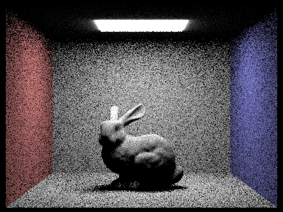
Figure 9. CBbunny direct lighting using uniform hemisphere sampling
with -s 16, -l 8, and -H.
Figure 10. CBbunny direct lighting using importance sampling of
lights with -s 16 and -l 8.
Rendered Comparison of the Two Direct-lighting Estimators
Both images use the same Cornell Box scene, the same camera, the same bunny mesh,
and the same overall sampling budget, so the visible difference comes from the
estimator rather than from geometry or material changes.
Hemisphere Image CBbunny_hemisphere_s16_l8: The direct illumination is
present, but the image is extremely noisy with dense speckling on the back wall. The body of
the mesh has rough granular shading and lacks smooth tonal transitions. The floor and shadow
regions also contain scattered bright and dark noise. Although the light source is visible,
most non-light pixels converge slowly. The estimator quality is limited by the mismatch between
uniform hemisphere sampling and the relatively small ceiling area light.
Importance Image CBbunny_importance_s16_l8: The scene and general settings
remain the same, but the direct-light samples are drawn from the light sources. This produces
a smoother and clearer form on the back wall, and the mesh renders more clearly in detailed
regions such as the ears and head. The contact shadow and soft shadow under the mesh are less
speckled, and the walls converge more cleanly. The noise reduction comes from lower variance,
with the difference arising from estimator efficiency despite the same sampling budget.
Figure 11. Light sampling on CBbunny with -s 1 and -l 1.
Figure 12. Light sampling on CBbunny with -s 1 and -l 4.
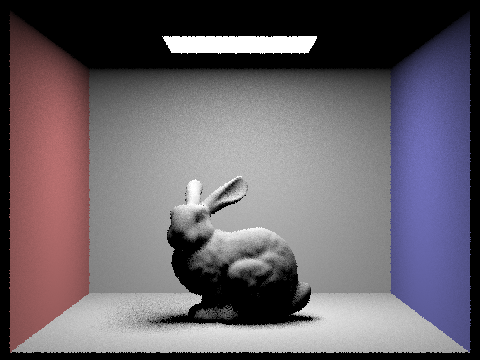
Figure 13. Light sampling on CBbunny with -s 1 and -l 16.
Figure 14. Light sampling on CBbunny with -s 1 and -l 64.
Four-image Light Sampling Sequence: s = 1, Varying l
CBbunny_lightsampling_s1_l1: This image has the highest noise
level, and the soft shadow under the mesh is unstable and speckled. The back
wall and the floor show strong Monte Carlo grain. The edges are very fuzzy, and
a single light sample per pixel gives the poorest estimate for the area-light integral.
CBbunny_lightsampling_s1_l4: This image shows visible clarity,
and the noise reduction is immediate relative to l = 1. The shadow region stabilizes,
and the back wall becomes less harshly grainy. The silhouette of the mesh also becomes
clearer and smoother. Increasing the number of light samples makes it possible to average
the area-light contribution more effectively than in the single-sample case.
CBbunny_lightsampling_s1_l16: At this quality level, the shadow
structure becomes much easier to read, with smoother transitions on the back wall and in
the shadow region. Noise on the floor drops further, and shading across the mesh becomes
less grainy across both small and broad surface features. The variance reduction is strong
compared with the previous two images.
CBbunny_lightsampling_s1_l64: At 64 light rays, the quality is the
highest of the four images. The shadow is much smoother and more stable, and noise along
the walls and floor is reduced substantially. The improvements are more incremental at this
sample count, so diminishing returns are visible even though the image quality is the best
in the sequence.
The only parameter changed in this sequence was the number of samples per light.
The shadow regions were the most visually informative because area-light shadows contain
a penumbra that must be integrated over an extended source. More light samples average more
independent measurements of the same direct-light contribution, so variance decreases as the
number of light samples increases. The improvement is strongest from very low sample counts
to moderate sample counts, with diminishing returns as the count becomes large.
The outgoing radiance from direct lighting is estimated from Lambertian diffuse reflection
through the integral
For Lambertian diffuse reflection,
\( f(\omega_o,\omega_i) = \rho / \pi \), where \( \rho \) is the diffuse reflectance,
albedo, or color. A larger value of \( \rho \) corresponds to a brighter diffuse surface.
Light sampling uses the probability density function returned by the light sampler, and the
cosine term is the dot product with the surface normal. In local coordinates, this corresponds
to the magnitude of the z-component. Visibility is enforced through the shadow-ray intersection
test, and zero-bounce emission contributes the \( L_e \) term directly at the surface hit.
Part 4: Global Illumination
Implementation of Recursive Indirect Lighting
In Part 4 we extended the renderer from direct illumination to full global
illumination by adding recursive path tracing. The final radiance for a
camera ray is the sum of zero-bounce emission and the radiance returned by
at_least_one_bounce_radiance. Zero-bounce radiance accounts for light
emitted directly by a surface. The recursive routine then adds one-bounce
direct lighting and estimates higher-order transport by sampling one BSDF
direction and tracing a new ray.
At each hit point we build a local shading frame with the surface normal
aligned to the positive z-axis. The outgoing direction is the negated ray
direction transformed into this local frame. We then sample an incoming
direction from the diffuse BSDF using sample_f, transform the sampled
direction back into world space, offset the new ray origin by EPS_F to
avoid self-intersection, decrease the ray depth by one, and recursively
evaluate the bounced ray. This is the step that allows light to move from
one diffuse surface to another and produce soft fill light, shadow lifting,
and color bleeding throughout the Cornell box.
Our diffuse material model is Lambertian, so the BSDF is
\[
f(\omega_o, \omega_i) = \frac{\rho}{\pi},
\]
where \( \rho \) is the diffuse reflectance. The rendering equation at a
surface point is
This cancellation explains why cosine-weighted sampling is a natural match
for diffuse transport. The cosine term from the rendering equation is built
into the proposal distribution, which reduces variance compared with
sampling the hemisphere uniformly.
We used two Part 4 viewing modes. In accumulated mode, each visible hit
returns direct lighting and also includes the recursively estimated
contribution from deeper bounces. In unaccumulated mode, the image isolates
a single bounce depth instead of summing all lower-order terms. This makes
it possible to visualize what the second bounce, third bounce, and later
bounces contribute individually.
We also used Russian Roulette to terminate long paths probabilistically.
After a valid bounce, the path continues with probability \( p_{rr} = 0.4 \).
If the path survives, its contribution is divided by that same continuation
probability, which gives the estimator
This keeps the expected value unchanged while reducing the average path
length. In practice, the visually important energy comes from the first few
bounces, while higher-order bounces are weaker and can be sampled
probabilistically without noticeably changing the final image at the same
sample budget.
Global Illumination Examples
The following renders show full global illumination with both direct and
indirect lighting enabled at 1024 samples per pixel. The bunny scene is the
main reference scene for Part 4, and the Lambertian spheres scene provides
a second view where tonal gradients are especially easy to read. In both
images, shadowed regions remain visible because light reaches them through
multiple diffuse paths rather than only from the ceiling emitter.
These images show the main visual signatures of global illumination. The
first is soft indirect fill in regions that do not have a direct line of
sight to the light. The second is color bleeding from the red and blue
Cornell box walls into nearby neutral surfaces. The third is a more natural
global balance of brightness, since energy is redistributed throughout the
scene instead of being concentrated only where direct lighting is strongest.
Figure 15. Full global illumination on CBbunny with 1024 samples per pixel, 4 light rays, and maximum ray depth 5.
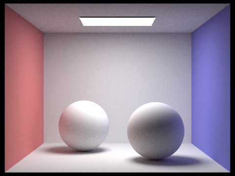
Figure 16. Full global illumination on CBspheres_lambertian with 1024 samples per pixel, 4 light rays, and maximum ray depth 5.
Direct-only versus Indirect-only Lighting
These two images separate the two major components of the rendering
equation. The direct-only image contains the one-bounce lighting term from
the area light. It has stronger local contrast, darker shadow regions, and
sharper transitions because only directly visible illumination is present.
The indirect-only image suppresses the top-level direct term while keeping
bounced transport active, so the bunny and box remain visible but the
result becomes softer, dimmer, and more spatially uniform.
This comparison makes it easier to explain what each term contributes.
Direct illumination is responsible for the strongest local structure and
makes the object immediately readable. Indirect illumination is responsible
for soft fill light, lifted shadows, and wall-color transfer. In the
indirect-only image, the red wall warms the left side of the bunny and
floor, while the blue wall cools the right side. That color bleeding is one
of the clearest visual indicators that the path tracer is solving nonlocal
light transport rather than a purely local shading model.
Figure 17. CBbunny rendered with only direct illumination.
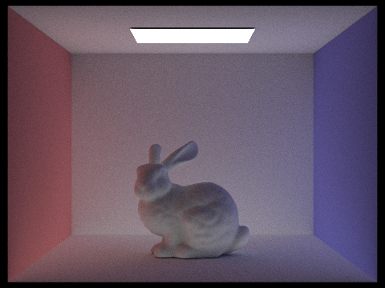
Figure 18. CBbunny rendered with only indirect illumination.
CBbunny Unaccumulated Bounce Sequence
The next six images isolate the contribution of a single bounce depth at a
time. Bounce depth 0 contains only zero-bounce emission, so the ceiling
light is visible while the rest of the Cornell box remains black. Bounce
depth 1 corresponds to the direct-light term, which makes the bunny and box
visible but still leaves the scene comparatively harsh and contrasty.
Bounce depth 2 is the most important frame in this sequence. It shows the
second bounce by itself, which is the first strong indirect contribution.
This is where the image brightens noticeably in regions that were dark in
the direct-only view, and it is where color bleeding becomes much easier to
see. Compared with rasterization, which naturally handles direct visibility
and local shading but not diffuse interreflection, this second-bounce
contribution is one of the main reasons path tracing looks more realistic.
Bounce depth 3 is weaker than bounce depth 2 because each diffuse
reflection loses energy through the Lambertian factor and the cosine term.
At the same time, the light becomes more uniform because repeated diffuse
reflections blur away directional structure. The third bounce therefore
looks dimmer and more ambient. The fourth and fifth bounces continue the
same trend. They are progressively weaker, smoother, and lower-frequency,
which is why they look more like subtle global fill than a dominant light
source.
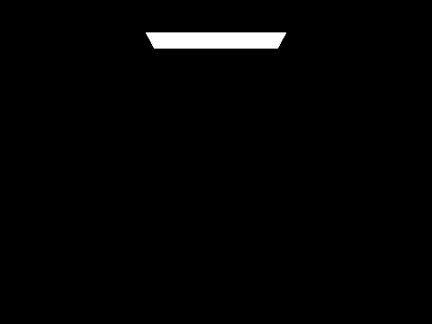
Figure 19. CBbunny unaccumulated bounce depth 0.
Figure 20. CBbunny unaccumulated bounce depth 1.
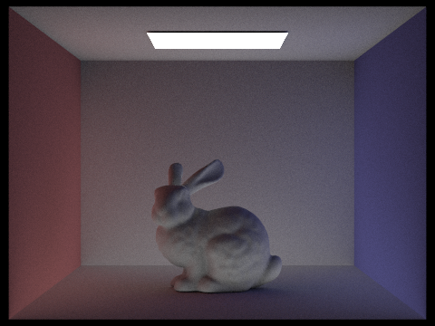
Figure 21. CBbunny unaccumulated bounce depth 2.
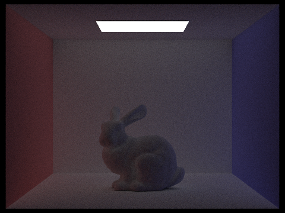
Figure 22. CBbunny unaccumulated bounce depth 3.
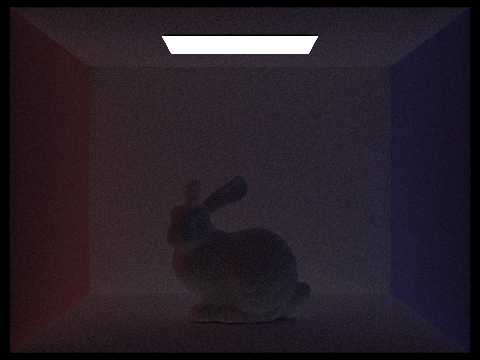
Figure 23. CBbunny unaccumulated bounce depth 4.
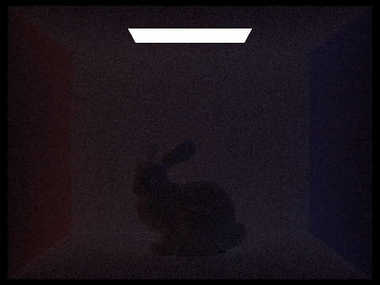
Figure 24. CBbunny unaccumulated bounce depth 5.
CBbunny Accumulated Bounce Sequence
In accumulated mode, each image contains all contributions up to the
selected maximum ray depth. Bounce depth 0 again shows only the emissive
light source. Bounce depth 1 adds direct lighting and therefore resembles
the direct-only render. Once the maximum depth reaches 2 and 3, the image
improves substantially. Shadowed regions brighten, the bunny separates more
clearly from the floor and back wall, and the red and blue wall colors
bleed into nearby neutral surfaces.
The differences become smaller at depths 4 and 5 because later diffuse
bounces contribute less energy. This is the same diminishing-return pattern
seen in the unaccumulated row, but the accumulated sequence makes the
convergence behavior easier to see. The unaccumulated images show what each
individual bounce contributes. The accumulated images show how the final
rendered solution is built up by summing those contributions over depth.
The most important visual jump is from depth 1 to depth 2. That is the
point where the image stops looking like direct illumination alone and
starts to read as global illumination. The transition from depth 2 to depth
3 is more subtle. It contributes less dramatic new structure and more soft
balancing of the scene through higher-order transport.
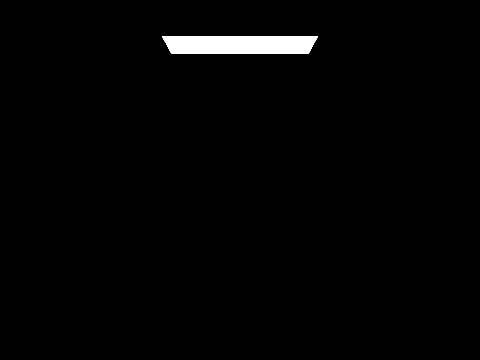
Figure 25. CBbunny accumulated bounce depth 0.
Figure 26. CBbunny accumulated bounce depth 1.
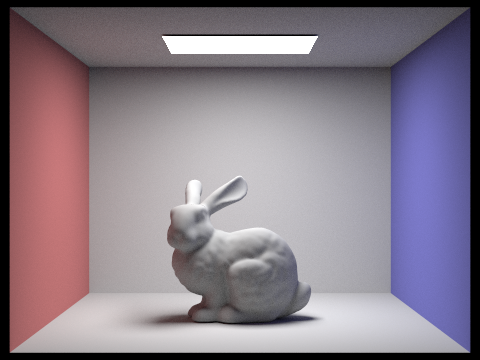
Figure 27. CBbunny accumulated bounce depth 2.
Figure 28. CBbunny accumulated bounce depth 3.
Figure 29. CBbunny accumulated bounce depth 4.
Figure 30. CBbunny accumulated bounce depth 5.
CBbunny Russian Roulette
Russian Roulette gives a probabilistic way to terminate long paths without
biasing the estimator. The images with maximum depths 0, 1, 2, 3, and 4
show the same basic progression seen in the accumulated sequence, but the
depth 100 image acts as a deep-path reference. It looks very close to the
moderate-depth renders because later diffuse bounces carry much less energy
than the first few bounces. Most of the visible structure is already in the
image by the time the path length reaches only a few bounces.
The main advantage of Russian Roulette is efficiency. A hard depth cutoff
forces every path to continue until the limit, even when the remaining
energy is negligible. Russian Roulette instead terminates many weak paths
early and keeps only a subset of them, while scaling surviving paths by the
inverse continuation probability. This preserves the expected contribution
but reduces the average amount of work per sample.
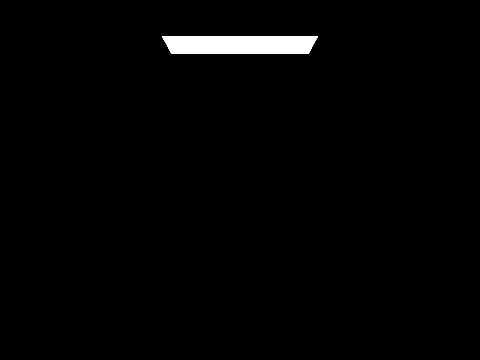
Figure 31. CBbunny Russian Roulette with maximum depth 0.
Figure 32. CBbunny Russian Roulette with maximum depth 1.
Figure 33. CBbunny Russian Roulette with maximum depth 2.
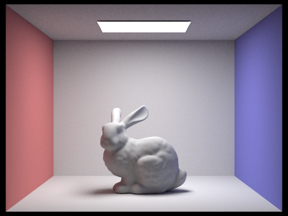
Figure 34. CBbunny Russian Roulette with maximum depth 3.
Figure 35. CBbunny Russian Roulette with maximum depth 4.
Figure 36. CBbunny Russian Roulette with maximum depth 100.
Sample-per-pixel Comparison
The final Part 4 comparison holds the scene, bounce settings, and light
sampling fixed and varies only the number of camera samples per pixel. At 1,
2, and 4 samples per pixel the Monte Carlo estimate has high variance, so
the bunny, floor, and walls are dominated by visible grain. At 8 and 16
samples per pixel the overall structure becomes much easier to read. At 64
samples per pixel the render is already fairly stable, and the jump from 64
to 1024 samples per pixel mainly removes the remaining low-amplitude speckle
rather than changing the global appearance of the scene.
This sequence demonstrates the standard Monte Carlo convergence law. If
\( N \) is the number of independent samples, then the variance decreases on
the order of \( 1 / N \), which means the standard deviation decreases on
the order of \( 1 / \sqrt{N} \). Early increases in the sample count produce
large visible improvements because the image starts out in a high-variance
regime. Later increases still help, but the returns are smaller per added
sample, which is why the high-sample images improve more gradually.
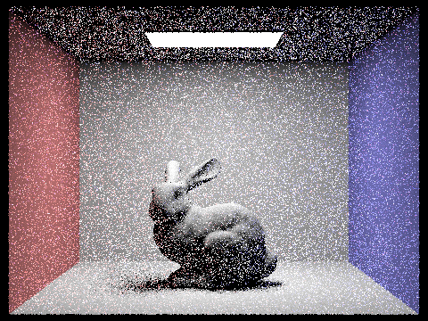
Figure 37. CBbunny at 1 sample per pixel.
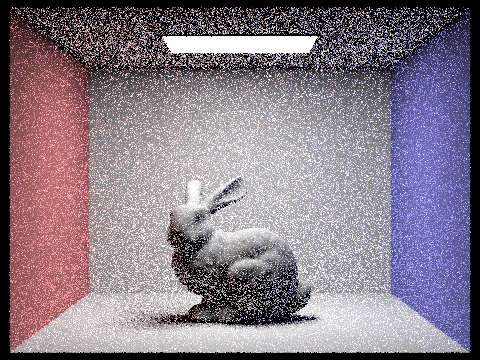
Figure 38. CBbunny at 2 samples per pixel.
Figure 39. CBbunny at 4 samples per pixel.
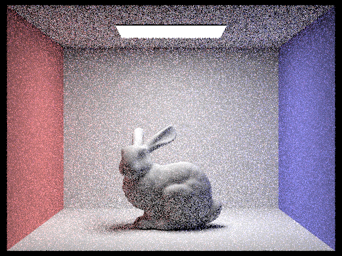
Figure 40. CBbunny at 8 samples per pixel.
Figure 41. CBbunny at 16 samples per pixel.
Figure 42. CBbunny at 64 samples per pixel.
Figure 43. CBbunny at 1024 samples per pixel.
Part 5: Adaptive Sampling
Implementation of Adaptive Sampling
The adaptive sampling algorithm here tests whether a given pixel has converged as we trace ray samples through it.
Converging signifies that taking more samples no longer significantly changes the pixel’s color anymore. To do this,
suppose that we have already taken \(n\) samples through a pixel. We acquire the mean and standard deviation of this sample in order to
calculate I, which is our confidence interval on the true pixel value. This (half-width) interval represents \(95%\) confidence that the true pixel value lies
within \(mean \pm I\).
The smaller \(I\) is, the closer we know our estimate is from the true value of convergence,
and so the more confidently we can conclude that the pixel has converged.
And so after calculating mean (\(\mu\)), standard deviation (\(\sigma^2\)), and in turn \(I\), we compare \(I\) against an error threshold-scaled mean luminance: \(maxTolerance \cdot \mu\).
Since \(maxTolerance\) is the uncertainty we are willing to accept at which we stop sampling, if \(I \leq maxTolerance \cdot \mu\), we stop sampling/tracing more rays
for this pixel. We're asking if our error is small relative to how bright this pixel actually is (mean luminance).
The implementation in \(pathtracer.cpp\) follows this logic. We build on the \(raytrace_pixel\) function to implement adaptive sampling. We initialize
\(s1\) and \(s2\) as \(0\) for calculating mean and santard deviation accumulatively in our existing loop. \(n\) is also initialized and kept as a counter as
how many loops (number of samples per pixel) we go before stopping. \(s1\) and \(s2\) are accumulated according to their respective formulas
\(s_1 = \sum_{k=1}^n x_k\) and \(s_2 = \sum_{k=1}^n x_k^2\) to calculate \(\mu = \frac{s_1}{n}\) and \(\sigma^2 = \frac{1}{n-1} \cdot \left( s_2 - \frac{s_1^2}{n} \right)\).
We convert radiance to illuminance with \(L.illum()\) to avoid having to use all R, G, and B values.
To avoid having to check every pixel’s convergence for each new sample, we use \(samplesPerBatch\). \(n % samplesPerBatch\) checks whether a pixel has converged every
\(samplesPerBatch\) samples instead. In short, \(samplesPerBatch\) samples are taken before each convergence check. We calculate the \(I\) at this point to check against \(maxTolerance \cdot \mu\),
our convergence condition.
Aka the sampling loop breaks if we have reached our desired uncertainty threshold, and keeps going if not. \(sampleCountBuffer\) stores how many samples were used for each pixel,
so we fill it with \(n\) (our actual number of samples per pixel) instead of \(num_samples\) to take into account changes we've made to implement
adaptive sampling.
In general, pixels with high variance \(\sigma\) means their samples vary a lot, meaning the pixels are still uncertain, so we continue sampling.
On the other hand, pixels with lower variance \(\sigma\) have similar samples, and so are stable, meaning we can terminate earlier. This
is ultimately related to why adaptive sampling concentrates work along difficult regions
like geometric edges, shadow boundaries, and detailed lighting changes. Edges, shadows, and detailed lighting have high variance. At edges,
single pixels have high variance because each sample can easily hit both the background or the object, so sampled values vary a lot.
At shadows, each sample can hit either vsisible light or shadows (light is blocked), making again the variance high at these areas. Detailed
lighting changes signify that rays bounce randomly and so sampled paths hit different rays a lot. Variance is high.
These reasons are why adaptive sampling have to use more rays at these areas than stabler areas. On the other hand, flat walls and other
low-variance pixels require less sampling since they are stable, and so of course converge much sooner.
Scene 1: Adaptive Sampling Result and Sampling-Rate Visualization
Choose the first scene and report the render settings used for this
comparison. State that the render used at least 2048 samples per pixel,
1 sample per light, and at least 5 for maximum ray depth. Describe where
the sampling-rate image is brightest or darkest and explain what those
regions reveal about variance in the scene.
Compare the final rendered image against the corresponding sampling-rate
image. Explain which parts of the image required the most samples and why.
Connect the visual pattern in the rate image to edges, shadows, fine
geometric structure, or other difficult regions in the final render.
Figure 44. Noise-free adaptive sampling render for scene 1.
Figure 45. Sampling-rate image for scene 1.
Scene 2: Adaptive Sampling Result and Sampling-Rate Visualization
Choose the second scene and repeat the same analysis. State the render
settings again if they differ from the first scene, or explicitly note
that the same sampling settings were used. Identify the regions that drew
the most samples and explain why those areas are harder to converge.
Compare the second scene against the first one. Explain whether adaptive
sampling concentrated effort in similar types of regions or whether the
second scene produced a different sampling pattern because of different
geometry, visibility structure, or lighting variation.
Figure 46. Noise-free adaptive sampling render for scene 2.